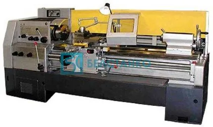
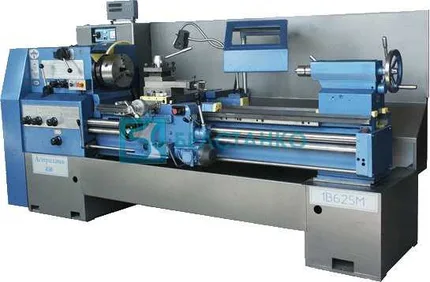
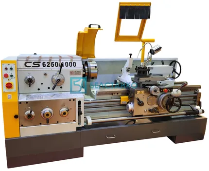
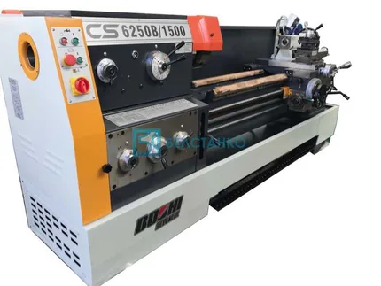
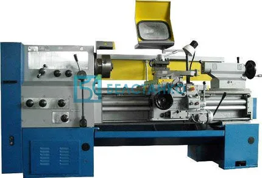
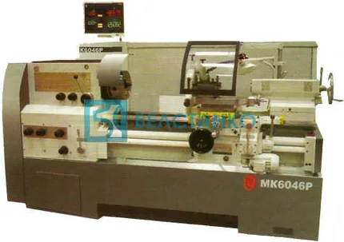

16В20
Станок токарно-винторезный
1 606 000 ₽
Станок токарно-винторезный
1 606 000 ₽
Станок токарно-винторезный
6 147 900 ₽
(1000) Токарно-винторезный станок (1В625)
Цена по запросу
(1000) Станок токарно-винторезный
1 480 000 ₽
Станок токарно-винторезный
2 730 000 ₽
Токарно-винторезный станок
2 124 000 ₽
Токарно-винторезный станок
2 250 000 ₽

Универсальный токарный станок
2 082 500 ₽
Станок токарно-винторезный (Samat 400, Samat-400)
Цена по запросу

Станок токарно-винторезный
6 219 456 ₽